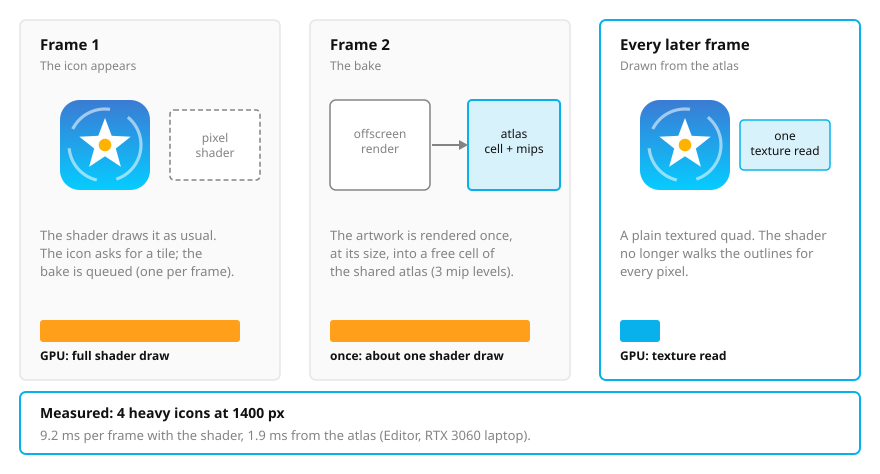
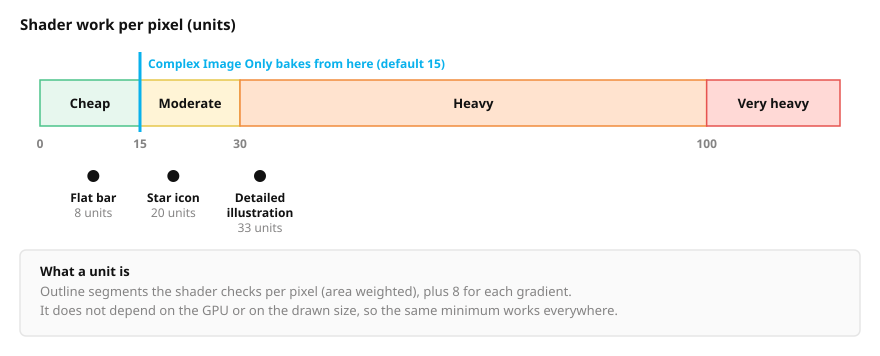

Runtime Raster
Large, complex artwork baked into a texture the first time it is drawn.
A large icon with many outlines or gradients is costly for the shader, because the cost is paid for every pixel, every frame. Runtime Raster renders such an icon once into the shared raster atlas and draws it from that texture from then on.

Measured: Runtime Raster on and off
Sixteen copies of one heavy icon at 1400 px, in Play mode at 1920 x 1080, timed with Unity's FrameTimingManager on an RTX 3060 laptop. The icons are the same artwork, so they share one tile and it is baked once. Your numbers depend on the GPU, the resolution and the artwork.
First frame
The frame the icons appear in. With Runtime Raster on, the tile is baked in that frame, so it is the most expensive frame (the worst frame measured).
| Runtime Raster off | Runtime Raster on | |
|---|---|---|
| GPU | N/A | about 1.2 ms |
| CPU, main thread | N/A | about 1.3 ms |
Later frames
Every frame after that, once the icons are on screen: the same scene with Runtime Raster off (the shader draws every icon) and on (the icons are drawn from baked tiles). Times are per frame.
| Runtime Raster off | Runtime Raster on | |
|---|---|---|
| GPU | about 10.7 ms | about 1.1 ms |
| CPU, main thread | about 6.9 ms (mostly waiting for the GPU) | about 0.4 ms |
| CPU, render thread | about 0.5 ms | about 0.7 ms |
Turn it on
Open Tools › Vectoria › Vectoria Settings and find Large artwork under Raster. It is a feature of the Shader resolver and works in uGUI and UI Toolkit.
| Setting | Meaning |
|---|---|
| Bake at runtime | Disabled: never. Complex Image Only (default): only artwork whose shader work reaches the minimum below. Always Enabled: all static artwork in the size range. |
| Minimum shader work (units) | Complex Image Only only. Default 15. |
| Smallest size (px) | Artwork drawn below this size keeps using the shader or its Raster LOD tile. Default 192. |
| Largest, desktop / mobile (px) | Largest tile. Default 2048 on desktop and 1024 on mobile. Larger artwork keeps using the shader. |
| Bake quota per frame (MP) | Megapixels of tiles baked in the frame an icon appears. Default 2.1. See Bake quota and waiting. |
| Over the quota, show | Raster LOD (low res, default), Shader or Invisible while a tile waits. |
Bake quota and waiting
A bake costs about one shader draw of the artwork, so baking many different heavy icons in the same frame would be a spike of its own. A quota limits it. The tile of the first heavy icon in a frame is always baked right away, before the icon is drawn. More tiles are baked in the same frame only while their pixels fit in Bake quota per frame (MP). The rest wait, and the atlas bakes one per frame.
While a tile waits, the setting Over the quota, show decides what the icon shows:
| Option | The icon shows | Good for |
|---|---|---|
| Raster LOD (low res) – default | The small tile baked at import, scaled up. The shader when the artwork has no import tile. | No spike and no empty space. It looks soft for a moment. |
| Shader (full cost) | The shader, at its full cost, as in earlier versions. | Sharp from the first frame, when the GPU has room. |
| Invisible | Nothing until the tile is ready. | The cheapest frames. Icons pop in, so use it behind a fade. |
In UI Toolkit the tile is baked in the same frame only when the atlas texture already exists and has room, because UI Toolkit binds a new atlas texture a little later. Otherwise the icon waits like one over the quota.
Prewarm in a loading screen
The first heavy icon of a session also pays to create the atlas page. To move that and the bake into a loading screen, bake the tile before the icon appears:
using Vectoria;
// physical pixels: the size the icon will have on screen
bool baked = VectoriaRaster.Prewarm(document, artboardId, sizePx: 1400f);
// later, when the scene is up (optional, tiles are also released after a hold time)
VectoriaRaster.ReleasePrewarmed();Prewarm returns false when that artwork would not get a tile: runtime raster is off, the artwork is not heavy enough in Complex Image Only mode, or the size is outside the range in Settings. The tile is held for 30 seconds by default (the holdSeconds argument), long enough for the icon to appear and take it over. Tiles come in steps, so a size in the same step as the real one is enough.
Complex Image Only
A tile costs memory, so it only pays off for artwork the shader finds expensive. Vectoria measures that in shader work units: the outline segments the shader checks per pixel (weighted by the area each shape covers) plus 8 for each gradient. Units do not depend on the GPU or on the size the icon is drawn at, so the same minimum means the same everywhere.

- The Vectoria painter's Stats window (
Window › Stats) shows the shader work and level of the active artboard, and whether the runtime bake would take it. - Units are measured on the document, not on your device. On an RTX 3060 laptop one unit costs about 0.03 ms per megapixel. The estimate was fitted on 79 files and can be off for some artwork, so treat the minimum as a tuning knob: raise it on fast hardware, or on a mobile platform that is short on memory.
What never gets a tile
- Artwork that is animating. It draws with the shader and asks for a tile again when it stops.
- Artwork that is mostly one flat colour.
- Sprite output (Raster LOD sprite mode), which uGUI draws as normal sprites.
The atlas and its memory

- Tiles step by about 1.4x: 256, 384, 512, 768, 1024, 1536 and 2040 px. An icon gets the smallest tile that is at least as large as it, so a tile is never shown at much less than its baked size, and the mip levels keep it clean when it is.
- A 1024 px page is about 5.6 MB and a 2048 px page about 22 MB, mips included. The atlas keeps at most 4 pages on desktop (about 89 MB at 2048 px pages) and 2 on mobile. When it is full, further icons keep using the shader.
- The page size is chosen when the atlas starts empty. A change to the largest size applies once the atlas next empties (idle for 30 seconds, or on entering Play mode).
- A tile nobody uses is freed after 5 seconds, so a menu that reopens finds its tiles again.
What a bake costs
- When baking is on, a small warm-up runs after the first scene loads (shaders, materials and the GPU's pipeline state). It makes the first real bake cost about 1.4 ms of CPU instead of about 5 ms in the Editor.
- Each later bake costs about 0.2 ms of CPU. The GPU time is about one shader draw of that artwork at that size, paid once per tile.
- Inside the quota the bake runs in the frame the icon appears. Beyond it, at most one bake runs per frame, so many different heavy icons appearing together are baked over a few frames.
- The tile matches what the shader draws to within 1/255.
Runtime Raster or Raster LOD?
They work together. Raster LOD covers small icons with tiles baked at import, so they are ready on the first frame and need no GPU bake; it is also the only path for Sprite Atlas output. Runtime Raster covers the large, costly ones. Between the two sizes the shader draws, where it is cheap.